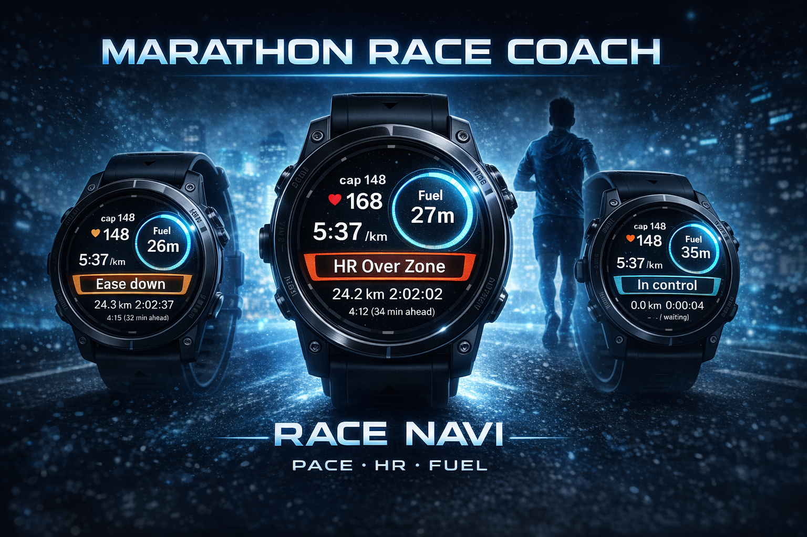

ペース迷子を防ぐ
少し上げるか、少し落とすか。その迷いを ACTION 表示で短く返します。
Garmin Connect IQ Data Field
NORMAL EDITION PREVIEWRace Navi は、ペースの迷い、補給の後回し、崩れの見逃しを ひとつの画面で受け止めるランナー向けガイドです。
1画面で判断材料を集約
ACTION と FUEL を短文で提示
設定は距離と目標タイムだけ

Concept
Race Navi が目指しているのは、レース中の情報量を増やすことではありません。 見るべきものを絞り、走りながら判断しやすい形にして返すことです。
少し上げるか、少し落とすか。その迷いを ACTION 表示で短く返します。
考えることが増える後半ほど、補給通知を先回りで受け取れます。
心拍ゾーンとドリフトの見立てを添えて、無理な押し込みを避けやすくします。
Core Features
「ちょい上げ」「ちょい落とし」「そのまま」を短文で表示し、次の判断をすぐ返します。
通常版は 35 分ごとを基準に通知。レース距離に応じて必要な頻度だけ案内します。
Garmin の心拍ゾーンをもとに、今どこまで余裕があるかを一目で把握できます。
1km ごとの進捗に加え、種目ごとの節目で距離カードを表示して集中を切らしません。
後半の崩れにつながる変化を早めに捉え、無理なオーバーペースを避けやすくします。
Runner Flow
通常版の設定は 2 項目だけ。準備の手間を増やさずに使い始められます。
ペース、心拍、補給の判断材料をまとめているので、視線移動を減らせます。
考え込みすぎず、短い表示をきっかけにリズムを整えながら走れます。
Two Modes
通常版
カスタム版
Now Preparing
次の段階では、Connect IQ Store への導線、対応機種の整理、 実機スクリーンショットを追加して公開用の情報を仕上げます。
ページ先頭へ戻る